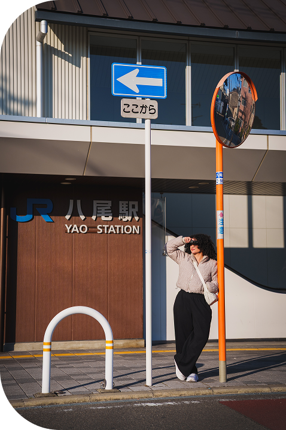

A designer for the moments complexity usually wins

That means untangling enterprise workflows, designing for the edge cases, and shipping specs that close the gap between intent and what gets built. Every project starts the same way: find the real problem, document the reasoning, build something that holds up.
References
The numbers, and what the people I've worked with have to say.
4+
Years experience
100K+
Users impacted
30+
Features shipped
25+
Research initiatives
3
Industries
Lead Designer
Jen is a very talented UX designer who is a delight to work with...
View quoteJen is a very talented UX designer who is a delight to work with! Jen's ability to create, organize and maintain a design system for cloudServe has been crucial to our success as a UX team. Not only does she bring efficiency and attention to detail to our team, but critical thinking and a passion for design research. Our team has benefitted immensely from her skills in prototyping, usability testing, marketing and Figma. Jen is very successful in collaborating across teams at GM, working along side engineering and data science teams to create quality products for our users.
UX/UI Designer
Jen and I collaborated as UX/UI Designers, and she has proven invaluable...
View quoteJen and I collaborated as UX/UI Designers, and she has proven invaluable. Jen led our transition from Adobe XD to Figma, improving our workflow and productivity. Her strong communication and user empathy during interviews and design processes are exceptional. She also played a key role in planning meetings with cloud architects, clarifying requirements, and streamlining our workflow. Jen's clear communication and visualization skills significantly enhanced our team's efficiency. She would be a great addition to your team.